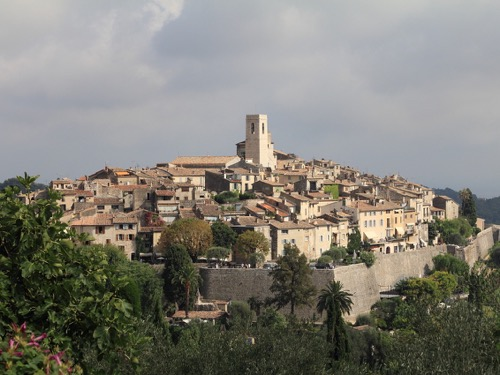
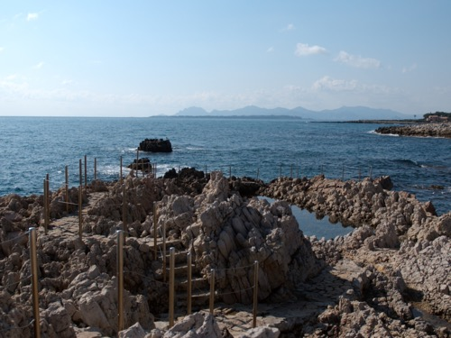
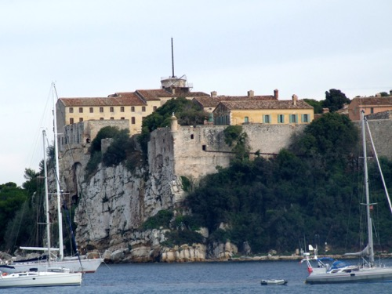
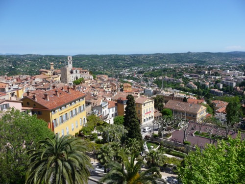

6 itinéraires prêts à suivre

Menton, Èze & Monaco : la route des classiques
Une journée en voiture entre villages perchés, panoramas et villas Belle Époque, de la frontière italienne à Monaco.

Nice, Peillon & Peille : ville et arrière-pays express
Le meilleur du Vieux Nice le matin, deux villages suspendus l'après-midi — sans passer la journée sur la route.

La route des villages perchés
Saint-Paul-de-Vence, Tourrettes, les gorges du Loup et Gourdon au coucher du soleil — le meilleur de l'arrière-pays en une journée.

Antibes, Biot & la pinède de Juan-les-Pins
Sentier côtier, sieste à l'ombre des pins et verre soufflé — une journée qui alterne mer et artisanat.

Îles de Lérins & Estérel sauvage
Une matinée au large de Cannes, un après-midi sur les roches rouges du massif volcanique le plus photogénique de la Riviera.

Grasse et la presqu'île de Saint-Tropez
Les parfumeries de Grasse le matin, un plus beau village de France et la citadelle du golfe l'après-midi.
Envie d'autre chose ? Crée ton propre itinéraire.
Choisis une durée, coche des zones ou des lieux — l'algorithme construit un parcours réaliste selon le temps disponible.